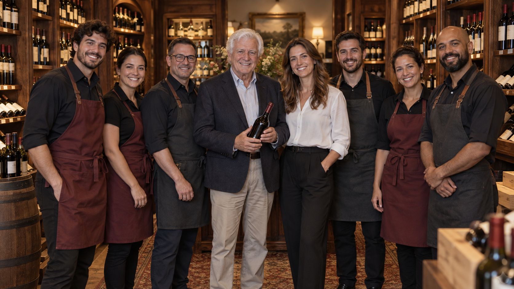

Nossa História
A Vinheria Agnello nasceu da paixão de Giulio Agnello pelos encontros à mesa. Filho de uma família italiana, ele cresceu ouvindo histórias enquanto ajudava a preparar os almoços de domingo. Nessas ocasiões, percebeu que o vinho tinha um lugar especial: cada garrafa vinha acompanhada de uma lembrança, uma conversa ou uma celebração. Anos depois, Giulio decidiu transformar esse carinho em uma vinheria. Começou com uma pequena seleção de rótulos escolhidos pessoalmente e uma ideia simples: receber cada cliente com a mesma atenção que dedicava aos amigos em sua casa. Gostava de perguntar sobre a ocasião, os sabores preferidos e as pessoas que estariam à mesa antes de recomendar um vinho. Hoje, a Vinheria Agnello mantém esse cuidado. Selecionamos e armazenamos cada garrafa com atenção e ajudamos nossos clientes a encontrar vinhos para momentos grandes e pequenos. Para nós, a melhor escolha é aquela que combina com a história de quem vai abrir a garrafa.

Nossos Diferenciais
- Mais de 15 anos de experiência
- Atendimento especializado e personalizado
- Vinhos nacionais e internacionais
- Orientações sobre harmonização
- Cuidados especiais com o armazenamento dos vinhos